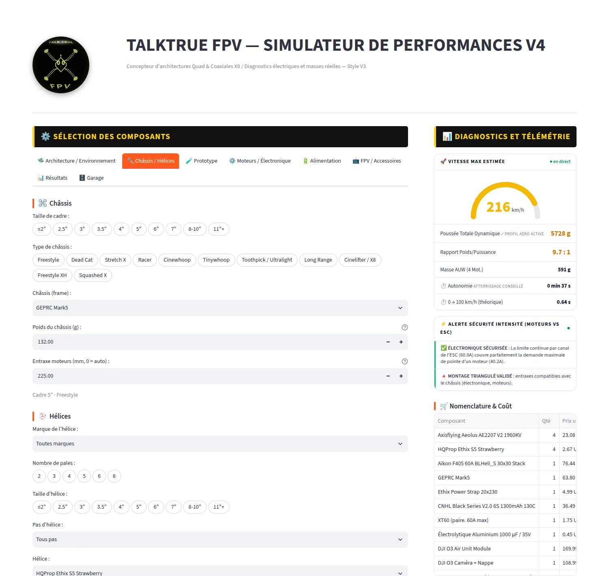
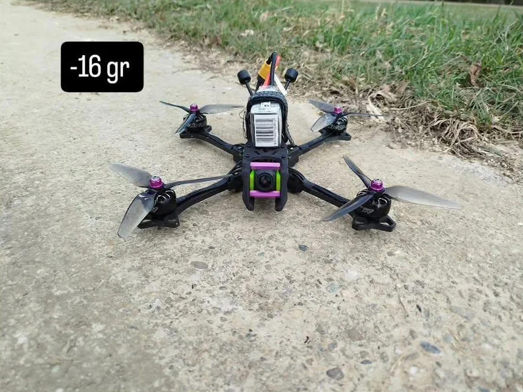
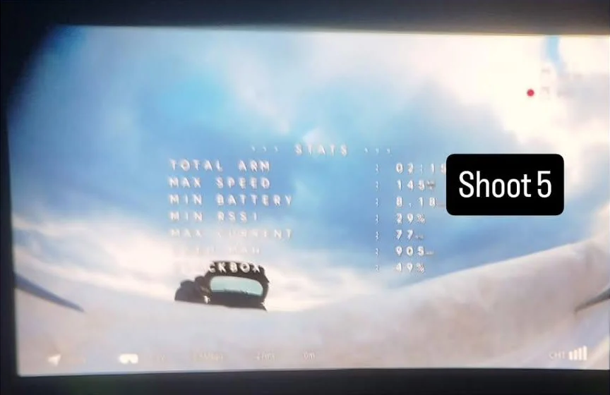
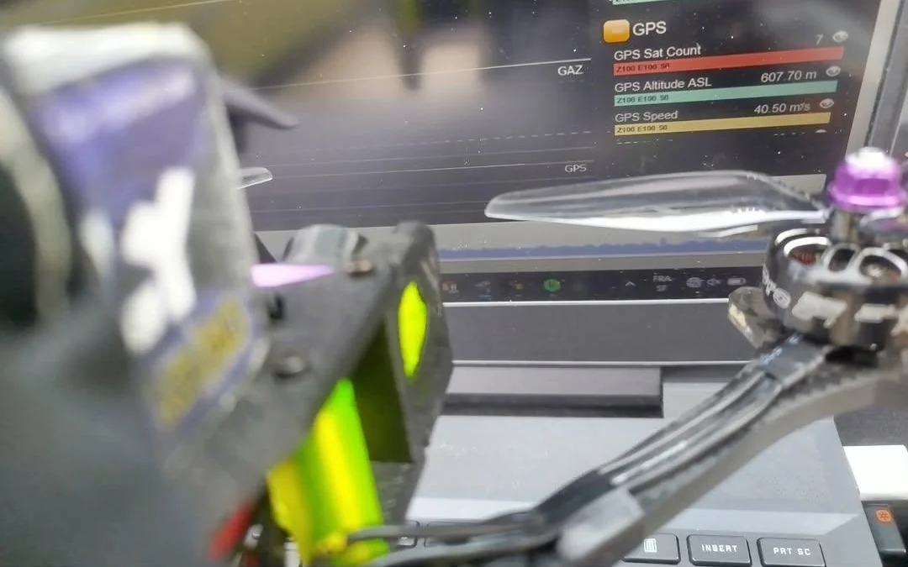
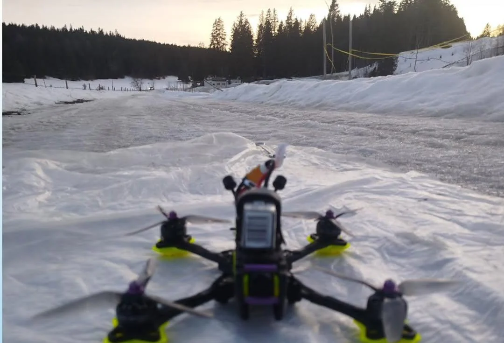
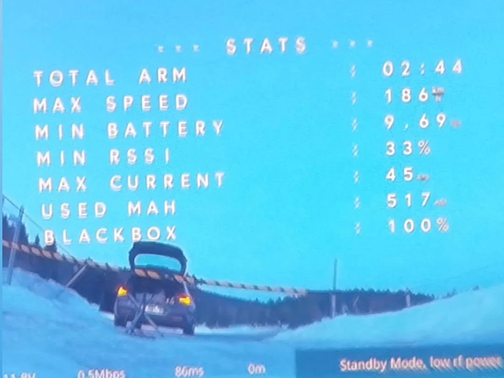

Conçois ton drone FPV. Connais sa vitesse avant de le construire.
Poussée, vitesse max, autonomie et 0 → 100 km/h, calculés avec de vrais composants du marché et calés sur un vrai vol GPS. Du 3 pouces au cinelifter X8, jusqu'au Quad Speeder à fuselage profilé, en 2D comme en 3D.
Tout ce qu'il faut pour choisir juste
Choisis tes moteurs, hélices, châssis, batterie et électronique : les performances se recalculent en direct, avec les prix et les liens d'achat de chaque pièce.
Vitesse max réaliste
Poussée qui baisse avec la vitesse, traînée selon l'inclinaison, densité de l'air du jour : pas une vitesse « théorique » irréaliste.
Autonomie par style de vol
Cinématique, freestyle ou plein gaz, courbe de décharge propre à chaque chimie (LiPo, LiHV, Li-ion).
Alertes de sécurité
Moteurs contre ESC, connecteur, taille d'hélice, tension : les incompatibilités sont signalées avant l'achat.
0 → 100 km/h
Accélération théorique à l'horizontale et à la verticale, pour comparer la nervosité des configurations.
Nomenclature & coût
Liste d'achat complète, prix en EUR ou USD, liens vers les revendeurs, export PDF / CSV.
Garage de configurations
Enregistre et compare tes configurations côte à côte pour trouver le meilleur compromis.
Une interface pensée pour les pilotes
- Pré-filtres par taille de cadre, type de châssis, marque, KV, pas d'hélice, cellules, capacité…
- Mémoire de tous tes choix entre les pages du mode d'emploi et du wiki.
- Conditions du jour : altitude, température, humidité et pression météo (QNH).

Comment ça marche
Choisis tes pièces
Moteurs, hélices, châssis, batterie, électronique : plus de 1 000 références réelles, filtrables.
Lis tes performances
Vitesse, autonomie, poussée, accélération et alertes se mettent à jour à chaque changement.
Compare & achète
Enregistre tes configurations, compare-les, exporte la liste d'achat avec les liens.
Calé sur un vrai vol, pas sur une brochure
Le modèle aérodynamique est ajusté sur un vol plein gaz mesuré au GPS, puis vérifié sur un second vol. Il tient compte de l'inclinaison réelle du drone, de la baisse de poussée avec la vitesse, de la densité de l'air et du format de la batterie. La synthèse de toutes les formules est publiée.
Vol de référence mesuré au GPS
| Châssis | TOWA 5″ freestyle, 539 g |
| Moteurs / hélices | XING-E 2207 2450KV · Ethix S5 |
| Batterie | 3S 1550 mAh |
| Conditions | 1 046 m · 0 °C · 35° |
| 2e vol de contrôle | 126 km/h · 436 m · 10 °C |
Des drones qui volent vraiment
Les mesures qui ont servi à caler le simulateur, et ce que donne le même TOWA 5″ une fois allégé et réglé.





Le simulateur est calé sur les vols de référence à 121 et 126 km/h (configuration d'origine, sans vent). Les 145 km/h ont été atteints après allègement et réglages Betaflight ; les 186 km/h avec le vent dans le dos.
Free ou Premium
Free
- Poussée, vitesse, autonomie, 0 → 100 km/h
- Traînée selon l'inclinaison et la batterie
- Alertes de sécurité et nomenclature d'achat
- Garage de 3 configurations
Premium
- Châssis prototype 5 formes + esquisse + 3D
- Quad Speeder propulsif / tractif + 3D
- Import STL et DXF
- Recalage sur ta mesure GPS
- Garage en ligne de 10 configurations
Questions fréquentes
Le simulateur est-il gratuit ?
Oui. Le calcul de poussée, vitesse, autonomie, accélération et les alertes de sécurité sont gratuits et sans inscription. Le mode Premium ajoute le châssis prototype, le Quad Speeder, la 3D, l'import STL/DXF, le recalage GPS et le garage en ligne.
Les vitesses calculées sont-elles fiables ?
Le modèle est calé sur un vrai vol mesuré au GPS (121 km/h) et tient compte de l'inclinaison, de la densité de l'air et du format réel de la batterie. En Premium, tu peux recaler le calcul sur ta propre mesure GPS.
Quelle différence avec eCalc ?
eCalc est une référence pour le calcul pur. TALKTRUE FPV est une plateforme de configuration : composants réels avec prix et liens d'achat, comparaison dans un garage, esquisses cotées, maquettes 3D et import de tes plans de CAO.
Puis-je importer mon drone depuis SolidWorks ou Fusion 360 ?
Oui, en Premium : un fichier STL pour la vue 3D et la surface frontale exacte à chaque inclinaison, ou un plan DXF dont la silhouette est mesurée automatiquement.
Comment obtenir un accès Premium ?
L'accès Premium est actuellement réservé aux testeurs sur invitation. Tu peux soutenir le développement par un don sur Ko-fi.
Prêt à voir ce que ton drone a dans le ventre ?
Aucune inscription. Choisis tes pièces, lis ta vitesse.
🚀 Lancer le simulateur